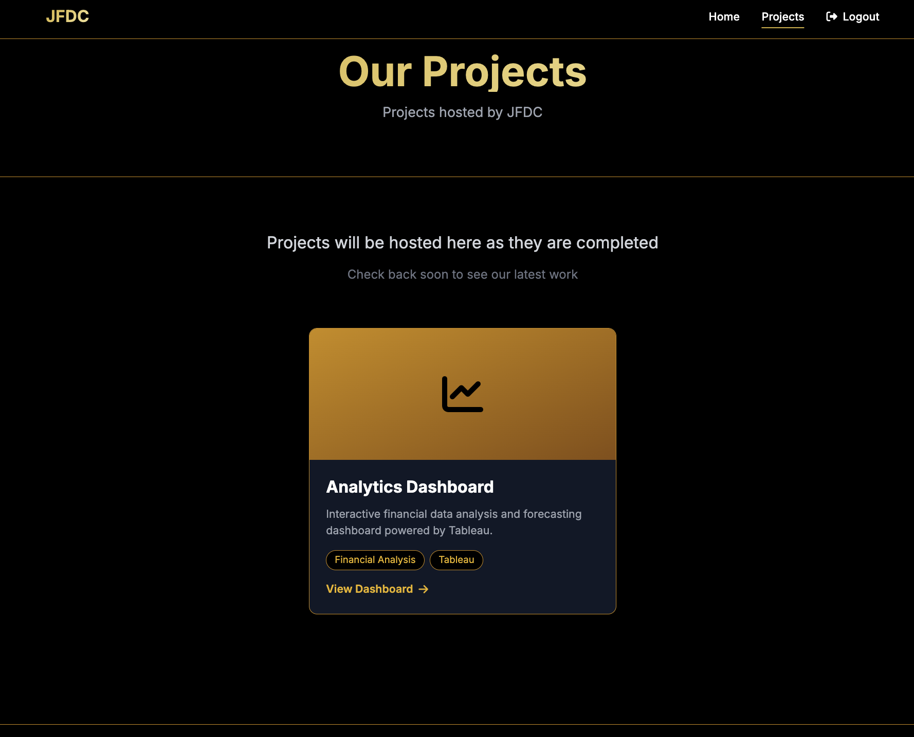
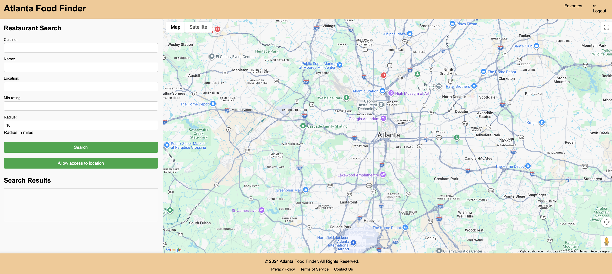

LMC 3403 assignments and professional work
Jump to
MP1 — Career Materials MP2 — Crisis Report and Infographic MP3 — Bloomberg Terminal TrainingThis project required developing a professional resume and cover letter tailored to a specific employer. I applied to Intuit's data engineering team, aligning my language and examples with their emphasis on scale and impact. The most significant revision I made was shifting my resume bullets from task-based descriptions to outcome-driven statements. For example, an early bullet read "worked on data pipeline optimization," which was revised to "engineered data pipelines reducing runtime by 6x and cutting error rates by 40%." That single change made the document more persuasive because it communicates value rather than just activity. The cover letter went through a similar revision, moving from a generic opening to a targeted paragraph explaining why my background specifically fit Intuit's needs.
I examined the use of AI in a military operation, analyzing how Anthropic, the U.S. Department of Defense, and media organizations each framed the event differently. My report examined the rhetorical strategies each party used, including selective disclosure, ethical framing, and strategic silence, to manage public perception. An early draft of the report was organized chronologically, summarizing what happened and when. After revision, I restructured it entirely around rhetorical analysis, adding formal sections for executive summary, methods, findings, and implications. This shifted the document from a timeline into an argument. I then translated the report's key findings into a visual infographic presenting a timeline of events, a stakeholder comparison, and a breakdown of framing strategies for a broader, less technical audience.
I created training materials to help Georgia Tech students learn how to use the Bloomberg Terminal. Most new users find Bloomberg's interface overwhelming because it uses dense financial jargon with little contextual guidance. During revision, I replaced technical terminology like "equity derivative pricing mechanisms" with plain descriptions of what each function does and when a student would actually use it. I also restructured the materials from a linear document into a modular Notion guide with collapsible sections and embedded screenshots, so users can jump directly to the workflow they need rather than reading from the beginning. This revision made the materials more accessible and more practical for the students the guide was designed to serve.
I built a full-stack AI-powered analytics platform for the Georgia Tech Student Government Association to detect anomalous fund disbursements across student organizations. I developed and deployed machine learning pipelines that modeled historical spending patterns and surfaced outliers and potential fraud signals in reimbursement data. The platform gave SGA leadership a data-driven tool to improve financial oversight. The system had to be not just accurate, but interpretable and actionable for administrators who are not data scientists, demonstrating that a tool's value depends on how clearly its outputs are communicated to the people using it.

SnackTrack Atlanta is a full-stack web application I built to help users discover nearby restaurants through live map integration and interactive search functionality. I developed both the back-end logic and a responsive front-end designed for seamless use across devices, integrating geolocation and dynamic search filters. Building SnackTrack pushed me to think about user experience as a form of communication: every design decision, from filter placement to map responsiveness, shapes how a user understands and interacts with the information being presented.

Arnav Mohnalkar • Georgia Institute of Technology • Spring 2026